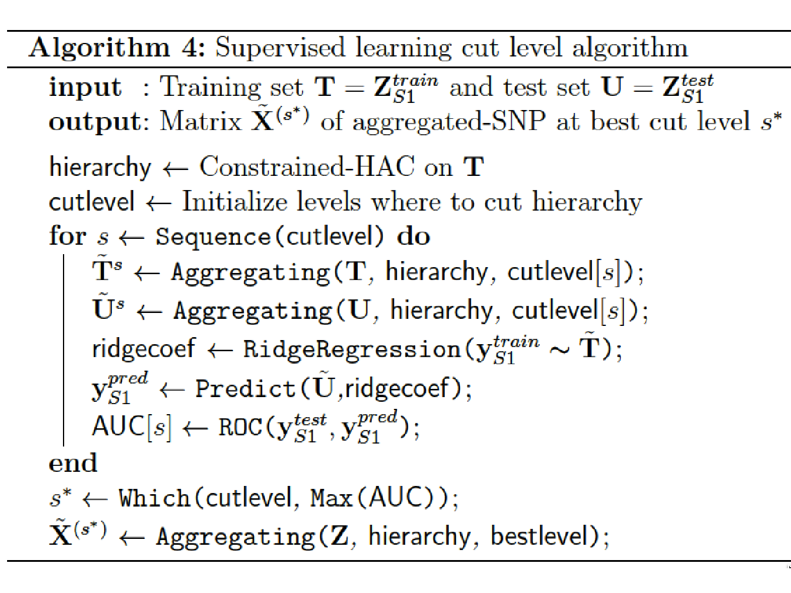

4.2 Method
In this section we describe a new method for performing GWAS using a four-step method that combines unsupervised and supervised learning techniques. This method improves the detection power of genomic regions implied in a disease while maintaining a good interpretability.
This method consists in:
Step 1: Performing a spatially constrained Hierarchical Agglomerative Clustering of the additively coded SNP matrix \(\mathbf{Z} \in \mathbb{R}^{n \times D}\) using the algorithm 3.7.3 developed by (A. Dehman, Ambroise, and Neuvial 2015).
Step 2: Applying a function to reduce the dimension of \(\mathbf{Z}\) using the group definition from the constrained-HAC. This step is described and illustrated in Figure 4.2.
Step 3: Estimating the optimal number of groups using a supervised learning approach to find the best cut into the hierarchical tree (cut level algorithm). This algorithm combines Steps 1 and 2 into an iterative process.
Step 4: Applying the function defined in Step 2 to each group identified in Step 3 to construct a new covariate matrix and perform multiple hypotheses testing on each new covariate to find significant associations with a disease phenotype \(\mathbf{y}\).
We entitled this method LEOS for LEarning the Optimale Scale in GWAS, implemented in a web server too available at http://stat.genopole.cnrs.fr/leos.
4.2.1 Step 1. Constrained-HAC
To take into account the structure of the genome in haplotype blocks, we
group the predictors (SNP) according to their LD in order to create a
new predictor matrix which reflects the structure of the genome. We use
the algorithm adjclust developed by (A. Dehman, Ambroise, and Neuvial 2015) which
consists in only allowing adjacent clusters to be merged, as described
in Section 3.7.3. This algorithm is available via the R
package at https://cran.r-project.org/web/packages/adjclust.
A similar adjacency-constrained hierarchical clustering using Ward’s linkage have already been proposed in (Grimm 1987), together with an algorithm called CONISS for Constrained Incremental Sums of Squares. However, the quadratic complexity of its implementation prevents it from being used on large genomic data sets.
In the context of GWAS, it is nevertheless possible to circumvent this problem by assuming that the similarity between physically distant SNP is small due to the particular LD structure of the genome, as seen in Section 1.7.
More specifically, we assume that the \(D\times D\) matrix of pairwise similarities defined as \(\mathbf{S} = dist(i,j)_{1 \leq i,j\leq D}\) is a band matrix of bandwidth \(h + 1\), where \(h \in [1,\dots,D]: dist(i,j) = 0\) for \(|i-j| \geq h\) and \(D\) the number of naturally ordered objects (SNP) to classify. This assumption is not restrictive, as taking \(h = D\) always works. However, considering the large dimension of genomic data, we are mostly interested in the case where \(h \ll D\).
Adjclust is an algorithm that uses this band similarity assumption to improve time and space complexity in the context of a genome-wide hierarchical clustering. The main features of this algorithm are the constant-time calculation of each of the Ward’s linkage involved in the spatially-constrained HAC and the storage of the candidate merges in a min-heap.
4.2.1.1 Ward’s linkage as a function of pre-calculated sums.
To decrease the complexity in the calculation of each of the Ward’s linkage, the trick is to note the sum of all similarities in any cluster \(K=\{u, \dots , v-1\}\) of size \(k = v-u\) as a sum of elements in the first \(\min(h,k)\) subdiagonals of \(\mathbf{S}\).
To see this, we define, for \(1 \leq r,l \leq D\), the sum of all elements of \(\mathbf{S}\) in the first \(l\) subdiagonals of the upper-right \(r \times r\) block of \(S\) as \[P(r,l) = \sum_{1 \leq i,j \leq r, |i-j| \ < l} dist(i,j) ,\] and symmetrically, \(\bar{P}(r, l) = P(p+1-r, l)\). Because \(P\) and \(\bar{P}\) are sums of elements in pencil-shaped areas, they are called forward pencil and backward pencil, as illustrated in Figure 4.1.
Figure 4.1: Example of forward pencils (in yellow and green) and backward pencils (in green and blue), and illustration of Equation (4.1) for cluster \(K=\{u, \dots , v-1\}\). Left: cluster smaller than bandwidth (\(k \leq h\)); right: cluster larger than bandwidth \(k \geq h\).
The advantage of computing the sums \(P\) and \(\bar{P}\) is that they can be used to calculate the sum \(S_{KK}\) of all similarities in cluster \(K\) following the identity: \[\begin{equation} P(v, h_k) + \bar{P}(u, h_k) = S_{KK} + P(p, h_k)\, \tag{4.1} \end{equation}\]
where \(h_k:=\min(h,k)\) and \(P(p, h_k)\) is the “full” pencil of bandwidth \(h_k\) (which also corresponds to \(\bar{P}(1, h_k)\)). By construction, all the bandwidths of the pencils involved are less than \(h\). Therefore, only pencils \(P(u,k)\) and \(\bar{P}(u,k)\) with \(1 \leq u \leq p\) and \(1 \leq k \leq h\) have to be pre-calculated, so that the total number of pencils to calculate and stored is less than \(2ph\). By calculating these pencils recursively using cumulative sums, the time complexity of the pre-calculation step is \(ph\) (see proof in (Alia Dehman 2015a)).
4.2.1.2 Storing candidate fusions in a min-heap.
Each iteration \(i\) of the hierarchical agglomerative clustering (Algorithm 1, Section 2.5.1, consists in finding the minimum of \(D-i\) elements, corresponding to the candidate fusions between the \(D-i+1\) clusters, stored in a sorted list, and merging the corresponding clusters. However, as the cost of deleting and inserting an element in a sorted list is linear in \(D\), adjclust choose to reduce the complexity by storing the candidate fusions in a partially-ordered data structure called a min-heap (Williams 1964).
A min-heap is a binary tree structure constructed such that the value of each node is smaller than the value of its two children. The advantage of such structure is the cost trade-off they achieve between maintaining the structure and finding the minimum element at each iteration. More specifically, at the beginning of the clustering, the heap is initialized with \(D-1\) candidate fusions in \(\mathcal{O}(D \log(D))\). Then, each of the \(D\) iteration involves at most \(\mathcal{O}(\log(D))\) operations as:
finding the best candidate fusion (root of the min heap) in \(\mathcal{O}(1)\),
creating a new cluster corresponding to this fusion in \(\mathcal{O}(1)\),
deleting the root of the min heap in \(\mathcal{O}(\log(D))\),
inserting two possible fusions in the min heap in \(\mathcal{O}(\log(D))\).
Globally, with a space complexity of \(\mathcal{O}(Dh)\), corresponding to the \(2Dh\) pre-calculated pencils, and a time complexity of \(\mathcal{O}(D(h + log(D))\), where \(\mathcal{O}(Dh)\) comes from the pre-calculation of pencils and \(\mathcal{O}(D\log(D))\) from the \(D\) iterations of the algorithm, adjclust achieves a quasi-linear time complexity and linear space complexity when \(h \ll D\).
In a GWAS application, the choice of \(h\) will mainly depends on the genotyping density and on the strength of the LD structure in the studied population. In the evaluation of our method in both numerical simulations 4.3.2 and real data application (Section 4.4.3), we set the value at \(h = 100\), having observed that higher values had no impact on the performance of the method.
4.2.2 Step 2. Dimension reduction function
One way of addressing issues related to high-dimensional statistics (and in particular the multiple testing burden that we mentioned in Section 2.6.5) is to reduce the dimensionality of the predictor matrix \(\mathbf{Z} \in \mathbb{R}^{N \times D}\) by creating a reduced matrix \(\tilde{\mathbf{X}}\) with new covariates that nevertheless remain representative of the initial matrix. This means reducing the number of predictors \(D\) to \(G \ll D\), with row \(\tilde{\mathbf{S}x}_{i}\) the \(G\)-dimensional vector of new predictors for observation \(i\). In this study we use a blockwise approach to construct a matrix of new uncorrelated predictors \(\tilde{\mathbf{X}} \in \mathbb{R}^{N \times G}\), with \(G\) the number of groups in linkage disequilibrium identified via the constrained agglomerative hierarchical clustering described in Step 1.
While classical methods use the initial set of covariates to predict a phenotype, we propose combining a clustering model with a dimension reduction approach in order to predict \(\mathbf{y}\). For each group identified with the constrained-HAC, we apply a function to obtain a single variable defined as the number of minor alleles present in the group. For each observation \(i\) and in each cluster \(g \in \left[1,\dots,G\right]\), the variable is defined as: \[\label{eq:aggregfun} \tilde{x}_{ig}~=~\sum_{d \in g} z_{id}.\]
We note that this function is close to the function used in the burden tests (Section 3.7.2) where we attribute a weight \(\omega_d = 1\) to each SNP since we do not particularly focus on rare variants but rather on variants having a \(MAF \geq 5\%\). In order that the values for the different groups are comparable, we eliminate the effect of group size by centering and scaling the matrix \(\tilde{\mathbf{X}}\) to unit variance. In the remainder of the paper we will refer to the covariates in \(\tilde{\mathbf{X}}\) as aggregated-SNP variables.
Figure 4.2: Schematic view of Step 2 of the algorithm to calculate the matrix of predictors \(\tilde{\mathbf{X}}^s\) at a given level \(s\) of the hierarchy.
4.2.3 Step 3. Optimal number of groups estimation
Estimating the optimal number of groups to select, i.e. the level at which the hierarchical clustering tree should be cut, is a fundamental matter which impacts the relevance of the association analysis. As we have seen in Section 1.7, it is known that the human genome is structured into haplotype blocks with little or no within-block recombination, but it is not easy to determine how these blocks are allocated throughout the genome for a given set of SNP.
In the literature, in an unsupervised learning context, a number of models have been proposed for determining the optimal number of groups in a hierarchical clustering (see Section 2.5.1). However, since GWAS consist in evaluating the likelihood of the disease from genetic markers, we propose an algorithm that makes use of the phenotype \(\mathbf{y}\) to determine the optimal number of clusters.
We propose here a supervised validation set approach to find this optimum. Since this algorithm aims to identify phenotype-related SNP clusters, it is necessary to split the dataset into two subsets to avoid an inflation of type I errors in the testing procedure. One subset, \([\mathbf{y}_{S1}, \mathbf{Z}_{S1}]\) with sample size \(t_1 = n/2\) is used to choose the optimal cut and the second one, \([\mathbf{y}_{S2}, \mathbf{Z}_{S2}]\) of sample size \(t_2=n/2\), to perform the hypothesis testing in Step 4.
The algorithm we propose can be summarized as follows:
Apply the constrained-HAC described in Step 1 on a training set \(\mathbf{T} = \mathbf{X}^{train}_{S1} \subset \mathbf{X}_{S1}\), and for a given level \(s\) of the hierarchy we apply the dimension reduction function defined above (Step 2) to each of the \(G_s\) clusters to construct the matrix \(\tilde{\mathbf{T}}^s = \left\lbrace \tilde{\mathbf{T}}_g^s \right\rbrace_{g = \mathcal{G}^s_1}^{\mathcal{G}^s_{G_s}}\).
Fit a ridge regression model to estimate the coefficients of the predictors in \(\tilde{\mathbf{T}}^s\). We chose to resort on the ridge regression model because, as we explained in Section 2.3.2, it is known to have a better stability in comparison to other penalized-regression models such as lasso regression (Bousquet and Elisseeff 2002).
Once the ridge coefficients are estimated, we predict the phenotypic values on the test set using the matrix \(\mathbf{U} = \mathbf{X}^{test}_{S2}\) and calculate either the mean test set error when the phenotype is quantitative or the Area Under the ROC curve (AUC-ROC) when it is binary.
Repeat with procedure for different levels in the hierarchy and defined the optimal cut level \(s^*\) (or equivalently the optimal number of groups \(G^{s^*}\)) as the level which maximizes the prediction accuracy criterion.

At last, once the optimal number of groups \(G^*\) has been determined, we apply the function to each selected group and construct the matrix \(\tilde{\mathbf{X}}^{(s^*)}\).
4.2.4 Step 4. Multiple testing on aggregated-SNP variables
Here we use a standard Single Marker Analysis, has described in Section 3.4, to find associations with the phenotype, but instead of calculating \(p\)-value for each SNP in \(\mathbf{Z}\), we calculate \(p\)-value for each aggregated-SNP variable in \(\tilde{\mathbf{X}}^{(s^*)}_{S2} \subset \tilde{\mathbf{X}}^{(s^*)}\).
For each single-predictor model, we perform a Likelihood Ratio Test (Section 2.6.3) where we compare the intercept-only model against the single-predictor model and get for each predictor a \(p\)-value using the \(\tilde\chi^2\) distribution.
As seen in Section 2.6.5, we need to compute an appropriate significance threshold to control either the Family-Wise Error Rate or the False Discovery Rate. However, as the FWER control methods reduce the significance level according to the number of tests carried out in the study, it is preferable, in this context, to control for the FDR to be less stringent on the significance threshold. We therefore chose to use the Benjamini-Hochberg procedure described in Section 2.6.5 to adjust the significance threshold.
References
Dehman, A., C. Ambroise, and P. Neuvial. 2015. “Performance of a Blockwise Approach in Variable Selection Using Linkage Disequilibrium Information.” BMC Bioinformatics 16: 148.
Grimm, Eric C. 1987. “CONISS: A Fortran 77 Program for Stratigraphically Constrained Cluster Analysis by the Method of Incremental Sum of Squares.” Computers & Geosciences 13 (1): 13–35.
Dehman, Alia. 2015a. “Spatial Clustering of Linkage Disequilibrium Blocks for Genome-Wide Association Studies.” PhD thesis, Université d’Evry Val d’Essonne; Université Paris-Saclay; Laboratoire de Mathématiques et Modélisation d’Evry.
Williams, J. W. J. 1964. “Algorithm 232: Heapsort.” Communications of the ACM 7 (6): 347â348.
Bousquet, O., and A. Elisseeff. 2002. “Stability and Generalization.” Journal of Machine Learning Research 2: 499–526.